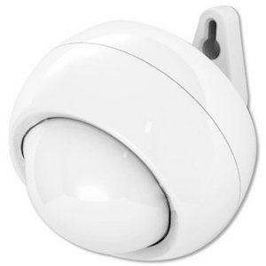
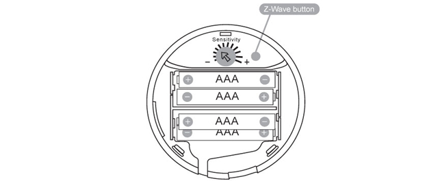

Aeon Labs Gen5 Multi-Sensor¶

Brief information¶
- Power Supply: USB DC 5V or battery power(4×AAA batteries)
- Operating Temperature: -10 oC to 60 oC .
- Measured Temperature Range: -10 C to 50 C . Accuracy: ±1 oC .
- Humidity Range: 20% to 80%. Accuracy: ±5% (at 25 oC ).
- Lighting: 0 LUX to 1000 LUX.
- Motion Sensitivity: 3 meters to 5 meters.
- Water Proofing: IP42
- Wireless Range: Up to 500feet/150 metres outdoors.
How to add to VENUS app¶
To add device to VENUS, below actions are required:

- Press “Add button” (button ‘+’) in app
- Reset device: input battery or power-supply then 1 time press z-wave button
- Wait for VENUS scan & detect this device and inform in app
- Reset device again to complete adding device to VENUS
Wake up information¶
- When battery is used, to wake up device, press and hold its Z-Wave Button for 3 seconds and then release it. Your MultiSensor’s LED should now be solid to indicate that it is active.
- When completing configurating or communicating with device, to put device into sleep mode for battery saving, press and hold its Z-Wave Button for 3 seconds and then release it.
- When power-supply is used, device is in waken up state always.
How to add/remove associated device(s) to¶
To add associated device(s) to this sensor, below action is required:
- Add z-wave notified-devices (which will be associated to this sensor) to VENUS
- Select Associate button and then select notified-device(s) to add
- Wake-up this sensor: 1 time press z-wave button
- If successful, pop-up notification displays in VENUS app
To remove associated device(s) from this sensor, below action is required:
- Select Associate button and then select notified-device(s) to remove
- Wake-up this sensor: 1 time press z-wave button
- If successful, pop-up notification displays in VENUS app
Factory reset¶
Press and hold z-wave button for 20 seconds and then release. LED will stay in solid for 2 seconds and then turn off indicates reset successfully.
Button pressed actions and events¶
Short 1 time pressed
- Add device to z-wave network
- Remove device from z-wave network
Press and hold 3 seconds Send Wake Up Notification (when it is in battery power) Press and hold 20 seconds Reset device to factory setting
Configuration description¶
Wakeup mode
- This setting enable/disable waking up mode for every 10 minutes when re-power the sensor in battery mode
- Available:
- 0: disable
- others: enable
Default: 0
Parameter 2, 1 byte size
Auto clear motion interval
- This setting adjusts time to send to associated devices to clear motion trigger.
- Available:
10 ~ 255: interval time in seconds
- 256 ~ 3600: interval time in units
- unit = setting time/60 if no remainder
- unit = setting time/60 if remainder
Default: 240
Parameter 3, 2 bytes size
Motion selection
- Enable/Disable the function of motion sensor
- Available:
- 0: disable
- 1: enable
Default: 1
Parameter 4, 1 byte size
Trigger target for motion sensor
- Select target which device sends trigger to when detecting motion
- Available:
- 1: trigger to associated device
- 2: trigger to controller
Default: 1
Parameter 5, 1 byte size
Low battery definition
- This setting defines low battery level
- Available:
- 10 ~ 50: value in percentage
Default: 0
Parameter 40, 1 bytes size
Auto report selection
- This setting enable/disable auto report when measurement reach the threshold of temperature, huminity, luminance and battery level.
- Available:
- 0: Disable
- 1: Enable
Default: 0
Parameter 40, 1 byte size
Temperature change
- Threshold change in temperature to induce an automatic report.
- Available: 0 ~ 32767 unit
- When unit is Celcius setting value = unit
- When unit is Farenheit setting value*1.8 = unit
Default: 1
Parameter 41, 2 bytes size
Huminity change
- Threshold change in humidity to induce an automatic report.
- Available: 0 ~ 32767
- Unit is percentage
- Value 10 means that if the current huminity gap more than 10%, report is sent
Default: 5
Parameter 42, 2 bytes size
Luminance change
- Threshold change in Luminance to induce an automatic report.
- Available: 0 ~ 32767 LUX
- Default: 100
- Parameter 43, 2 bytes size
Battery change
- Threshold change in battery to induce an automatic report.
- Available: 0 ~ 32767
- Unit is percentage
- Value 10 means that if the current battery gap more than 10%, report is sent
Default: 5
Parameter 44, 2 bytes size
Temperature threshold
- This setting determines if this sensor sends report when low temperature or not. Less than -15 oC is low temperature.
- Available:
- 0: Disable
- 1: Enable
Default: 0
Parameter 46, 1 byte size
Report type selection
- This setting defines type of information reports send to controller.
- Available:
- None of report will be sent to controller
- Luminance
- Huminity
- Temperature
- Battery
Default: all types are selected
Parameter 101, 4 bytes size
Auto report interval
- This setting defines interval time to auto send report to controller.
- Available: 5 ~ 2678400 units
- When USB power, unit is seconds
- When battery, min is 60 minutes. When setting value is in 5 –> 3600, 60 minutes; 3601 –> 7200, 120 minutes; and more...
Default: 3600 (60 min)
Parameter 111, 4 bytes size